SISTEMA INTERNACIONAL DE
UNIDADES SI
Unidades derivadas del SI
Como su nombre lo indica, las unidades derivadas del SI se desprenden
de las unidades básicas, mediante combinaciones y relaciones entre ellas, para así poder expresar magnitudes
físicas matemáticamente.

Metro cúbico (m3):
Unidad derivada construida para medir el volumen de una sustancia.
.png)
Kilogramo por metro cúbico (kg/m3):
Unidad derivada construida para medir la densidad de un cuerpo.
Newton (N):
Rindiendo homenaje al padre de la física moderna, el británico Isaac Newton (1643-1727), es la unidad derivada construida para medir la fuerza.
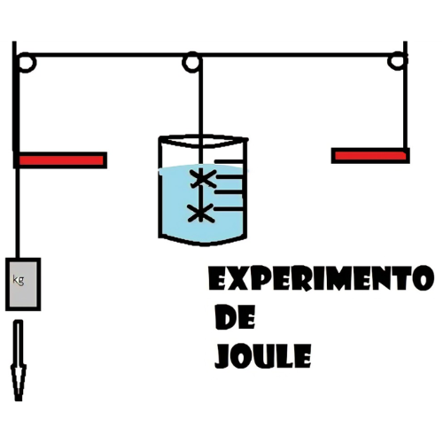
Julios/Joule (J):
Toma su nombre del físico inglés James Prescott Joule (1818-1889), y es la unidad derivada del SI que se emplea para medir la energía, el trabajo o el calor.

¿Qué es el Sistema
Internacional de Unidades?

Se conoce como el Sistema Internacional de Unidades (abreviado SI) al sistema de unidades de medición
empleado en prácticamente todo el mundo. Es utilizado en la construcción de los más numerosos instrumentos de
medición para el consumo tanto especializado como cotidiano.
Un sistema de unidades es un patrón científico que permite poner en relación las cosas
en base a un conjunto de unidades imaginarias. Es decir, se trata de un sistema para poder registrar la realidad:
pesar, medir, cronometrar, etc., en base a un conjunto de unidades que son siempre iguales a sí mismas y que se pueden
aplicar en cualquier parte del mundo con igual valor.
El Sistema Internacional de Unidades es el más aceptado de todos los sistemas de medición
(aunque no el único, pues en algunos países emplean aún el sistema anglosajón) y el único que tiende a cierta
universalización en la actualidad.
¿Qué es el Sistema
Internacional de Unidades?
En las siguientes secciones, te explicaremos las bases de las conversiones de unidades y cómo aplicar
estos conceptos en diferentes situaciones.
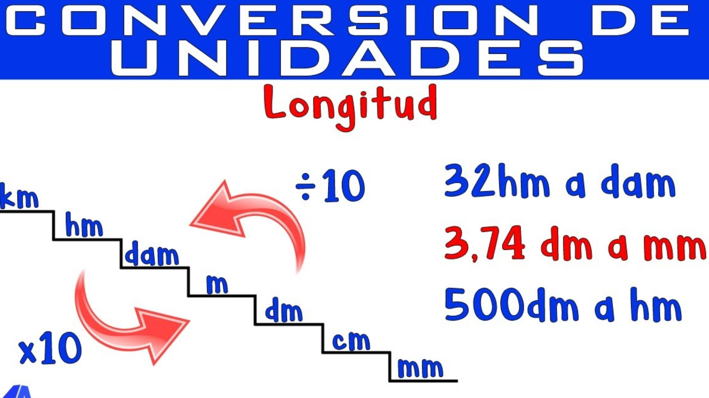
¿Cómo convertir unidades de longitud?:
La conversión de unidades de longitud se suele hacer utilizando factores de conversión. Por ejemplo, para convertir metros (m) a centímetros (cm), debemos multiplicar por 100, ya que 1 metro equivale a 100 centímetros.
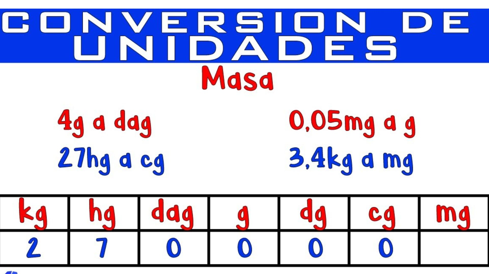
¿Cómo convertir unidades de masa?:
La conversión de unidades de masa se suele hacer utilizando factores de conversión. Por ejemplo, para convertir kilogramos (kg) a gramos (g), debemos multiplicar por 1000, ya que 1 kilogramo equivale a 1000 gramos.
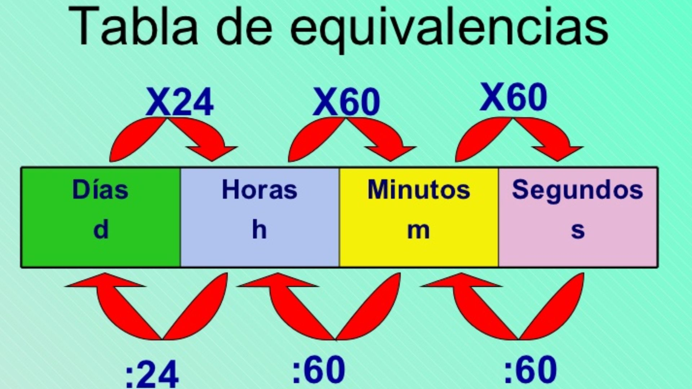
¿Cómo convertir unidades de tiempo?:
La conversión de unidades de tiempo se suele hacer utilizando factores de conversión. Por ejemplo, para convertir horas (h) a minutos (min), debemos multiplicar por 60, ya que 1 hora equivale a 60 minutos.
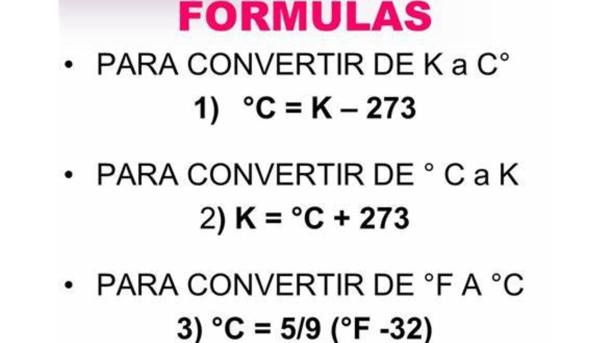
¿Cómo convertir unidades de temperatura?:
La conversión de unidades de temperatura se suele hacer utilizando fórmulas matemáticas. Por ejemplo, para convertir grados Celsius (°C) a grados Fahrenheit (°F), debemos utilizar la fórmula: °F = (°C × 1,8) + 32.
Cuestionario Interactivo
De acuerdo con el sistema Internacional
de unidades (SI) el tiempo se mide en:
el tiempo se mide en:
La intensidad de corriente
electrica..
se mide en:
De acuerdo al sistema internacional de
unidades (SI), la temperatura...
se mide en:
Como se mide la cantidad de
sustancia segun el sistema
Internacionalde unidades:
Con que unidad..
se mide el trabajo:
Que tipo de longitud..
es la Masa
Cual es la unidad derivada
que se usa para
medir el volumen:
Cual es la unidad basica de
la intensidad luminosa
la intensidad luminosa :
Que formula debemos usar para
convertir grados Celsius
a grados Fahrenheit:
Que tipo de unidad es
el litro:
DATOS CURIOSOS QUE NO SABIAS SOBRE LAS UNIDADES DE MEDIDA
Originalmente, James Watt definió una unidad de potencia que llamó horse power, caballo de fuerza, que debía ser la potencia producida por un caballo normal en plena faena, 1 hp = 746 w
Comentarios
-
 anonimous
anonimous
La Teoría del Big Bang -
anonimousss2
La Teoría de la Relatividad General
También te puede interesar
Fisica Moderna Ciencias Naturales Mecanica cuantica Ramas de la Fisica Termodinamica Biofisica Cinematica Ramas de la Fisica Movimientos Mecanica en Fisica Energia en Fisica Geografia Fisica
Unidades básicas del SI
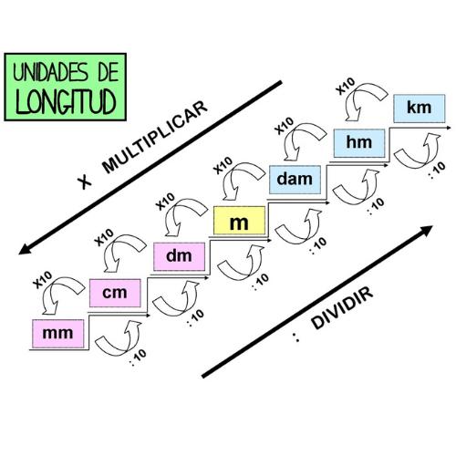
Metro (m)
Rindiendo homenaje al padre de la física moderna, el británico Isaac Newton (1643-1727), es la unidad derivada construida para medir la fuerza.
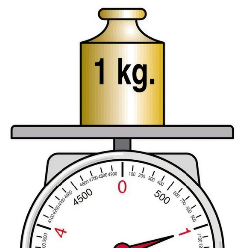
Kilogramo (kg)
La unidad básica de masa, definida científicamente a partir de un prototipo de kilogramo compuesto por una aleación 90% de platino y 10% de iridio.
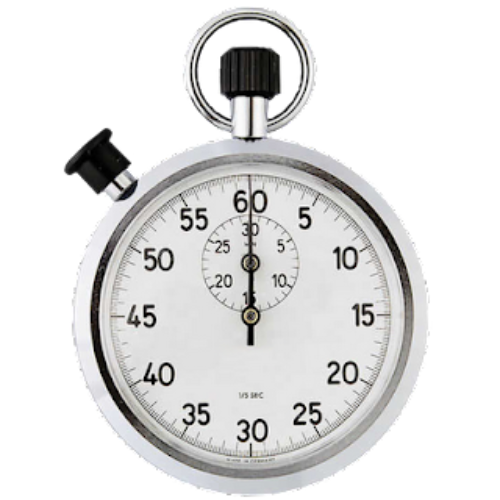
Segundo (s)
La unidad básica de tiempo, definida científicamente como la duración de 9.192.631.770 períodos de la radiación correspondiente a la transición entre los dos niveles hiperfinos.
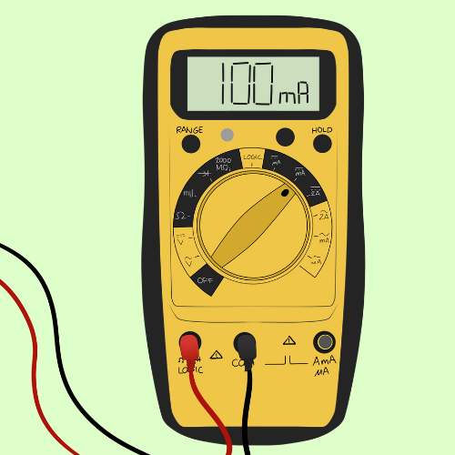
Amperio (A)
La unidad básica de la corriente eléctrica, que rinde homenaje al físico francés André-Marie Ampère (1775-1836), y definida científicamente como la intensidad de una corriente constante.
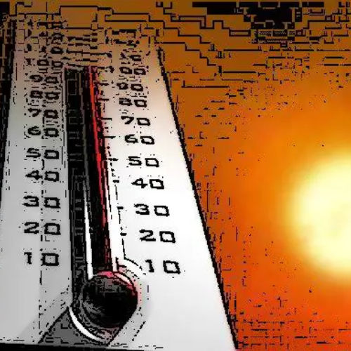
Kelvin (K)
La unidad básica de la temperatura y la termodinámica, que rinde homenaje a su creador, el físico británico William Thomson (1824-1907), también conocido como Lord Kelvin.
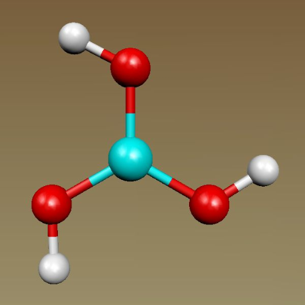
Mol (mol)
La unidad básica para medir la cantidad de una sustancia dentro de una mezcla o disolución, definida científicamente como la cantidad de sustancia de un sistema.
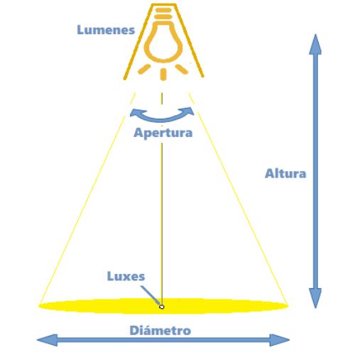
Candela (cd)
Esta es la unidad básica de la intensidad luminosa, definida científicamente como la que posee, en una dirección dada, una fuente que emite una radiación monocromática de 540 x 1012.
Compartir
¿Tienes alguna teoria?
Dejamelo en los comentarios